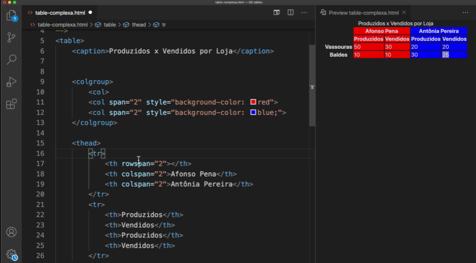

Linguagem HTML
Main
É um agrupador usado para delimitar o conteúdo principal do nosso site. Normalmente concentra as seções, artigos e conteúdos periféricos.
Section
Cria seções para sua página. Ela pode conter o conteúdo diretamente no seu corpo ou dividir os conteúdos em artigos com conteúdos específicos. Segundo a documentação oficial da W3C, “uma seção é um agrupamento temático de conteúdos, tipicamente com um cabeçalho”.
Article
Um artigo é um elemento que vai conter um conteúdo que pode ser lido de forma independente e dizem respeito a um mesmo assunto. Podemos usar um "Article" para delimitar um post de blog ou fórum, uma notícia, etc.
Aside
Delimita um conteúdo periférico e complementar ao conteúdo principal de um artigo ou seção. Normalmente um conteúdo "aside" está posicionado ao lado de um determinado texto ou até mesmo no meio dele, exatamente como fizemos no bloco de texto apresentado anteriormente, falando sobre “MÚLTIPLOS NÍVEIS”.
Footer
Cria um rodapé para o site inteiro, seção ou artigo. É um conteúdo que não faz parte diretamente do conteúdo nem é um conteúdo periférico (o que caracterizaria um "aside"), mas possui informações sobre autoria do conteúdo, links adicionais, mapa do site, documentos relacionados
A seguir, vou criar uma proposta de estrutura para um projeto de site. Não tome ela como a única possibilidade de criar o posicionamento de elementos de agrupamento semântico.
Input
O input é mais utilizado para inserir checklists, botões, entre outros.
Radio
O input do tipo radio possui o campo de check redondo, e pode ser selecionada apenas uma opção.
Precisa ter a mesma informação em name e no primeiro input precisa ter a informação checked.
Exemplo:
<input type="radio" name="numero" id="1" checked>
<label for="1">Número 1</label>
<input type="radio" name="numero" id="2">
<label for="2">Número 2</label>
Select
Dentro de select precisa ter option, uma para cada opção.
Caso precise deixar a caixa aberta, deve ser inserida a opção size com o número de linhas (options) que serão utilizadas.
Obs.: Toda option precisa ter o value.
Form
Atributos básico:
- action: Para onde o formulário será submetido, para onde as informações serão enviadas (mesma página, outra página).
- method:
- GET: Os dados aparecem no caminho do link
- POST: Os dados não aparecem no caminho do link
Fieldset
Serve para agrupar campos. Ele não precisa estar dentro do formulário, mas é preciso ter o ID.
Atributos:
form / id
Utilizados para vincular o fielset com o formulário. O atributo form é inserido no fieldset e o id na tag form.
Legend
Nome do agrupamento, é o primeiro elemento do fieldset.
Disable
Desabilita todos os elementos internos. Não serão enviados ao submeter o formulário.
Exemplo:
Label
Disponibiliza o texto do campo o formulário.
O atributo for serve para fazer a conexão entre o label e a tag de entrada de dados.
Exemplo:
<label for="nome"></label>
<input id="nome" type="text">
Obs.: A informação de for e id precisam ser a mesma.
Datalist
Introduz uma lista pré-definida.
Exemplo:
Imagens
Responsividade
Para colocar imagem de forma que seja responsiva, é necessário utilizar o código abaixo:
picture
source media="(max-width: 1000px)" srcset="nome_da_imagem.jpg" type="image/png"
source media="(max-width: 100px)" srcset="nome_da_imagem.jpg" type="image/png"
img src="imagens/irina-blok.jpg" alt="Nome da imagem"
picture
O navegador exibirá a imagem que se adequar ao tamanho da tela do dispositivo.
Nota: Pode ser utilizado quantos "source" forem necessário, apenas deve ser indicada a largura máxima.
Legenda
Para inserir legenda na imagem utiliza-se a tag figure e figcaption.
Exemplo:
<a href="https://google.com">
<figure>
<img src="https://google.com" alt="">
<figcaption> Legenda </figcaption>
</figure>
</a>
Vídeos
Pode haver navegador que não suportará o tipo do arquivo, por isso é importante deixar isso especificado.
Controles:
- source - Para colocar mais de uma opção de vídeo, dessa forma caso o navegador não consiga ler a primera opção ele irá para a segunda, e assim por diante.
- type - O tipo de arquivo (.mp4, etc.)
- controls - Para o usuário interagir com o vídeo (dar play, etc.)
- autoplay - Para o vídeo disparar no momento em que a página carregar.
- preload - Para carregar algumas informações, como por exemplo quanto tempo o vídeo possui.
- loop - Para o vídeo disparar novamente quando chegar no final.
- muted - Para o vídeo começar mutado.
- poster - Para deixar uma imagem de fundo emquanto o vídeo não começa.
Exemplo:
<video controls autoplay preload="metadata" loop muted poster="download.png">
<source src="download.mp4" type="video/mp4">
<source src="download.wmv" type="video/wmv">
</video>
Para inserir vídeos de outros sites, como YouTube, é necessário copiar o ifreme do vídeo, através da opção "Compratilhar" e em seguida "Incorporar".
Tabela
caption - Texto anterior à tabela
col - Utilizado para inserir configuração na coluna
span - Quantidade de colunas que serão configuradas (se for mais de uma coluna)
rowspan - Para mesclar 2 ou mais linhas
colspan - Para mesclar 2 ou mais colunas
scope - O escopo da tabela
- colgroup - Agrupamento de colunas
- col - Colunas
- row - Linhas
Links
Fragmento
Utilizado para chamar uma seção na página.
Exemplo:
<ul>
<li>< a href="#secao_1">Seção 1</li>
<li>< a href="#secao_2">Seção 2</li>
<li>< a href="#secao_3">Seção 3</li>
</ul>
<h1 id="secao_1">Seção 1</h1>
<h1 id="secao_2">Seção 2</h1>
<h1 id="secao_2">Seção 3</h1>
Modelo de Caixas
Uma caixa dentro de outra "Aninhamento"
Tipos de caixa:
Box-level
Sempre inicia em uma linha nova, ocupa a largura inteira e quebra a linha.
Exemplos:
- h1 - h6
- p
- div
- main
- header
- nav
- article
- aside
- footer
- form
- video
Inline-level
Continua na mesma linha do conteúdo, não quebra a linha e a caixa ocupa exatamente o tamanho do conteúdo inserido na caixa.
Exemplos:
- a
- strong
- span
- code
- small
- em
- sup
- sub
- label
- button
- input
- select
Posicionamento de caixas / imagens
O position indica onde o elemento vai ser posicionado na página. Ao usar o position podemos adicionar outras propriedades como top, right, bottom, left e z-index, que vão determinar o posicionamento final do elemento.
Tipos de position:
- static
- relative
- absolute
- fixed
static
Por padrão os elementos são static. Isso significa que os elementos irão seguir o fluxo normal do HTML.
relative
Quando o position é relative os elementos são deslocados do seu posicionamento normal, mas sem afetar o posicionamento de outros elementos da página.
absolute
Quando o position é absolute o elemento é deslocado saindo do fluxo normal. O elemento de position absolute é posicionado em relação ao seu parent element mais próximo. Se esse elemento "pai" não existir, ele será posicionando em relação ao bloco contendo a raiz do elemento.
fixed
Quando aplicado o position fixed é como se criasse um elemento flutuante que fica fixo na página, independente do scrolling feito.
Exemplo: Para posicionar a caixa/imagem em um ponto fixo na página, é necessário utilizar as seguintes configurações:
position: absolute;
left: 50%;
top: 50%;
transform: (-50%, -50%);
Obs.: Os valores em porcentagem são apenas exemplos, os mesmos podem e devem ser alterados de acordo com a necessidade.
Element Stacking
É o empilhamento de elementos. Podemos usar o z-index para determinar a ordem da posição do elemento. Quanto maior o z-index, mais "acima" vai aparecer o elemento.
top, right, bottom e left indicam a o recuo que será definido para o elemento.
Exemplo:
.box1 {
background-color: red;
position: absolute;
left: 5px;
top: 5px;
z-index: 3;
}
.box2 {
background-color: green;
position: absolute;
left: 10px;
top: 10px
}
Flexbox
Nos permite posicionar os elementos dentro da caixa
Controle em uma dimensão (horizontal ou vertical)
Alinhamento, direcionamento, ordenar e tamanhos
Flex-direction
Indica qual a direção do flex: horizontal ou vertical
row - horizontal
column - vertical
Alinhamento
justify-content - Alinha o conteúdo
align-items - Alinha os itens
Grid
Linguagem CSS
ID
O id só pode ser utilizado para um único elemento.
Não pode ser utilizado espaço na nomenclatura.
Ex.: nome_do_id
Para inserir no código, é utilizada a "#"
Ex.:
#nome_do_id {
font-family: ...
color: ...
...
}
Class
A class pode ser utilizada para diversos elementos.
Não pode ser utilizado espaço na nomenclatura.
Ex.: nome_da_class
Para inserir no código, é utilizado o "."
Ex.:
.nome_da_class {
font-family: ...
color: ...
...
}
Pseudo-classes
É o estado de um determinado elemento no HTML.
Representado por "":"
Ex.:
a: visited {
color: #red
}
Pseudo-elementos
Age nas classes, id, elementos, etc. Eles agem no conteúdo.
Representado por ""::"
Ex.:
a:: after {
content: ' link';
}
Fontes
Font Variant
Faz variações na apresentação da fonte.
Exemplo:
p {
font-variant: small-caps;
}
Font Stretch
Utilizada para alargamento ou encolhimento da fonte.
Aceita palavras-chaves como: expanded, condensed, normal.
Aceita porcentagens de 50% a 200%.
Obs.: Essa propriedade não vai funcionar em todas as fontes.
Exemplo:
p {
font-stretch: expanded;
}
Letter spacing
Define o espaçamento entre os caracteres.
Exemplo:
p {
letter-spacing: 4px;
}
Word spacing
Define o espaçamento entre palavras.
Exemplo:
p {
word-spacing: 1em;
}
Line height
Define os espaços entre linhas.
Pode ser com unidades ou sem unidades de medida.
Exemplo:
p {
line-height: 1.5;
}
Text transform
Transformação do texto.
Valores podem ser: none | capitalize | uppercase | lowercase | full-width | full-size-kana
Exemplo:
p {
text-transform: uppercase;
}
Text-decoration
Aparência decorativa de um texto.
- line: underline | overline | line-through
- style: wavy | dotted | double | dashed | solid
- color: <color> values
Obs.: Podemos aplicar mais de 1 valor
Exemplo:
p {
text-decoration: wavy overline blue;
}
Text-shadow
Sombra aplicada a um texto.
As informações são dispostas como: offset-x | offset-y | blur-radius | color
Exemplo:
p {
text-shadow: 1px 1px 1px red;
}
Shorthand
Ordem: font-style, font-variant, font-weight, font-stretch, font-size, line-height e font-family
Exemplo:
p {
font: italic normal bold normal 3em/1.5 Helvetica, Arial, sans-serif;
}
Fontes externas
Fontes para web:
- @font-face
- @import
- link
@font-face
Utilizamos um arquivo fonte, e inserimos o nome com extensão na url e em font-family colocamos o nome da fonte.
Exemplo:
@font-face {
font-family: 'Noto Sans';
src: url('NotoSans-Regular.ttf') format('truetype');
}
p {
font-family: 'Noto Sans', sans-serif;
}
@import
Para inserir uma fonte do google.
Exemplo:
@import url('https://fonts.googleapis.com/css2?family=Noto+Sans&display=swap');
}
p {
font-family: 'Noto Sans', sans-serif;
}
Link
O link é inserido no head do HTML.
Sombras nas caixas
A propriedade box-shadow e seus quatro valores (ordem):
- Deslocamento horizontal (h-offset): quanto a sombra vai andar para o lado direito (valores negativos causam deslocamento para a esquerda)
- Deslocamento vertical (v-offset): quanto a sombra vai andar para baixo (valores negativos causam deslocamento para cima)
- Embaçamento (blur): quanto a sombra vai se espalhar pelo fundo
- Cor (color): cor da sombra. É possível usar transparência.
Exemplo:
box-shadow: 3px 5px 4px black;
Para sombras internar utlizar o "inset".
Exemplo:
box-shadow: inset 3px 5px 4px black;
Bordas
Bordas arredondadas
border-radius: arredonda os vértices
Exemplos:
border-radius: 10px 10px 10px 10px
border-radius: 10px 10px
border-radius: 10px
Bordas personalizadas
border-image: Utiliza uma imagem como borda.
Exemplo:
border: 12px solid transparent;
border-image: url('download.png') 50 repeat;
Nota: Precisa ter a informação da borda.
Padding
Margem dentro da caixa, margem entre a borda da caixa e o conteúdo.
Border
Borda da caixa, a linha visível. Pode ter cor, espessura e formato.
Outline
Traçado visual que fica fora da borda.
Margin
Espaço fora da borda.
Observações:
Ordem para inserir as medidas (margin e padding):
Modo completo:
top - right - bottom - left
exemplo: 0px 0px 0px 0px
Shorthand:
top/bottom - right/left
exemplo: 0px 0px
Ordem para inserir configurações:
Width - style - color
exemplo: 10px solid black
Cores
Gradiente
Para utilizar gradiente, é necessário utilizar o código "background-image", inserir o tipo do gradiente, a direção e as cores.
Exemplo:
background-image: linear-gradient(to bottom, #38EFFC, #155C61);
:Root
Utilizada para deixar uma seleção de cores pré-definidas
Exemplo:
:root {
--cor0: #38EFFC;
--cor1: #36D5E0;
--cor2: #27A9B3;
--cor3: #208C94;
--cor4: #155C61;
}
Background
Background-Image
Para inserir o link de uma imagem externa.
Exemplo:
background-image: url(https://www.tecmundo.com.br/software/119207-saiba-4-principais-formatos-imagens.htm)
Background-Repeat
Para inserir uma imagem de fundo de tamanho menor que o fundo, e que se repete, é utilizado o "background-repeat".
Background-Position
Define o posição da imagem.

Exemplo:
background-position: center center
Background-Size
Indica o tamanho que a imagem de fundo terá.
Pode ser definida com %, px, em, etc., sendo o primeiro valor referente à largura e o segundo à altura.
Exemplo:
background-size: 50em 50em
Background-Origin
Define o ponto de origem de uma imagem específica.
Exemplo:
background-origin: border-box
Background-Clip
Define se a cor ou imagem do background iniciam debaixo de sua área de borda, preenchimento ou conteúdo.
Exemplo:
background-clip: text
Background-Attachment
scroll - A imagem rola junto com o conteúdo.
fixed - A imagem de fundo fica fixa, enquanto o conteúdo é rolado.
Shorthand de Background
Para utilizar a shorthand do Background, as informações devem seguir a ordem:
- background-color
- background-image
- background-repeat
- background-position
- background-size
- background-origin
- background-clip
- background-attachment
Obs.: O background-size não funciona no shorthand atualmente, portanto é necessário que seja inserido separado da shorthand.
Material de Apoio
Site de Paleta de Cores
Site de Imagens
Site de Ícones
Códigos CSS
Outros
- CodePen - HTML, CSS e JavaScript
- Mockflow - Diagramação de sites
- Lista de linguagens de Programação
- Sistema Operacional da Microsoft